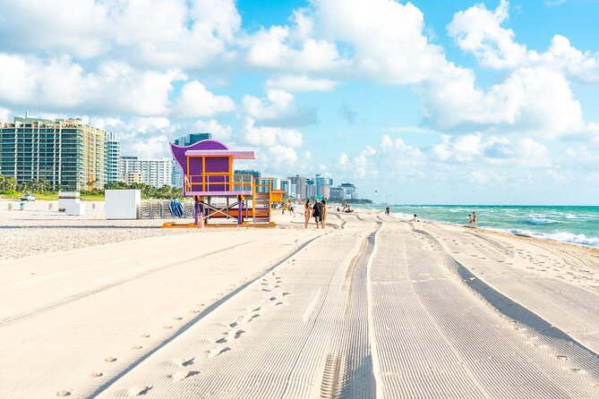

TOP 5 CIDADES PARA CONHECER
1 Coliseu Itália
Coliseu, também conhecido como Anfiteatro Flaviano, é um anfiteatro oval localizado no centro da cidade de Roma, capital da Itália.
2 Cuba
Cuba, oficialmente República de Cuba, é um país insular localizado no mar do Caribe, na América Central e Caribe.
3 TEXAS
O Texas é um grande estado no sul dos EUA com desertos, florestas de pinheiros e o rio Grande, que delimita a fronteira com o México.
4 Orlando
Orlando, uma cidade no centro da Flórida, abriga mais de uma dezena de parques temáticos.
5 Miami Beach
